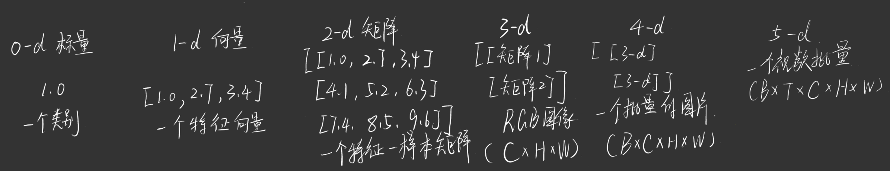
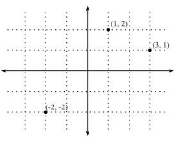
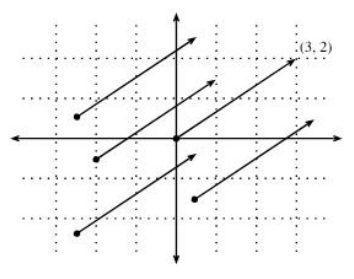
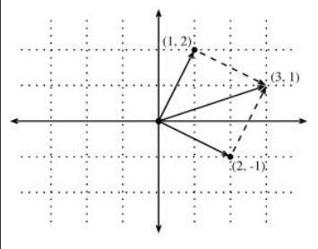

(1)几何与线性代数
针对几何与线性代数的理解做一些记录。
张量的初步理解
此部分，我们讨论最基础的张量的知识。
首先，我们先思考一个问题，深度学习中，我们是在对什么东西进行处理分析？
根据一些常识，可能是图片，视频，文本，最常见的是一些特征组合，利用深度学习得到我们想要的东西。
实际上，以上的一些内容我们都可以用张量来表示，接下来，我们先简单理解一下，我们在深度学习中使用的张量是怎么样的？

可以看出来，N维张量，其实都是N-1维张量的一个列表，即堆砌N-1维张量，就成为了一个N维张量了。
根据图片中的一些介绍我们可以看出，我们原本需要处理的内容，都可以转换为一个个张量，如一张彩色图片，可以看作一个3-d张量，一段文本，一段token也可以组成张量。
所以我们可以理解为：神经网络实质上是对张量进行一些表示，变换，比较，压缩等处理，最终得到想要的新的张量结果。 线性代数研究的，恰恰就是”如何表示对象，以及如何对这些表示进行结构化变换”。
实际上，N维度张量的形状本身并没有意义，我们要研究的，是每个轴的语义是什么，例如一个2-d张量，其形状为(32, 128)，这到底是32个样本 * 128个特征，还是32个时间步 * 128个隐藏维度，我们仅仅看形状是无法判断的，因此我们需要更深层次的理解。
而我们需要设置的N为多少呢？这要看我们的数据需要有多少个独立索引的自然结果，如我们原本一张RGB图片，其如果每次都是只输入一张，我们可以设置其输入为(C, H, W)，但如果我们想设置他每次都放入32张RGB图片时候，显然需要多一个维度来表示32这个数字，显然就是Batch，所以我们新的输入形状为(B, C, H, W)了。
通过以上介绍，我们可以初步理解张量在未来工作中有着很重要的作用，理解其基础形态是非常有意义的。
向量的理解
我们从最常用的一个2-d张量开始说起，即向量。
向量可以被认为是空间中的点或方向，从本质上来说，向量就是一个最简单的列表，列表其中的元素是一个个的标量。在数学家的眼中，向量常常表示为两种形态，即：
列向量： x =\begin{bmatrix}1 \\7 \\0 \\1\end{bmatrix} 行向量： x =\begin{bmatrix}1 & 7 & 0 & 1\end{bmatrix} 在深度学习中，这常常是灵活的，对于一个单向量，我们往往是设定它为列向量，而对于一个样本特征矩阵，我们设定一个样本为一个行向量，一个特征为一个列向量。
这些向量有什么具体含义呢？
(1)可以看作是一个点的坐标，往往这都是相对于原点而言的：

图中有向量(1, 2), (3, 1), (-2, -2)，只是二维向量这样好表示一些，可以往更高维度发展。对于分类问题，我们可以简单的看做是看成把点进行几簇的分类，有时候一开始混杂在一起，需要进行一些坐标轴转化才可以分开，这就是深度学习的作用了。
(2)可以看作是一个有方向和长度的箭头：

根据图可以看出，向量(3, 2)可以看作是一个向右3格，向上2格。图中的所有向量都是(3, 2)，其都是等价的，可以得出向量的平移不变性质，这对我们理解向量加减非常有意义。
(3)回归到最实际的理解，一个向量可以表达为一个数据对象：
例如一个人的特征可以看作是： x =\begin{bmatrix}年龄,& 身高,& 体重,& 收入\end{bmatrix}
几何向量和机器学习中的特征向量，本质上可以用同一套数学语言处理。
对于向量的加减运算：
其公式为： (a_1, b_1)+(a_2, b_2) = (a_1+a_2, b_1+b_2) 实际上就是逐元素进行运算，下图可以帮助理解：

图中可以看出，两个向量相加可以看作是将a，b向量其中一个的头部与另一个的尾部相接，然后链接剩余的尾部至头部，这就是简单的向量加减理解了。
如果是一个标量n与向量相乘，实际上就是把向量拉长至原本的n倍大小罢了。
点积与角度
(1)向量的长度：
我们先思考一下，一个向量(a, b)，其可以代表为从原点(0, 0)指向(a, b)的一个箭头，请问其长度为多少呢？
根据勾股定理，我们可以得出，其长度为\sqrt{(a-0)^2+(b-0)^2}
这就是向量的 Norm(范数)，最常见的公式为： L_2Norm: \sqrt{x_1^2+x_2^2+\cdots+x_n^2} 其代表了，向量从原点出发，在空间中延伸了多远。
(2)点积计算： 取两个列向量u,v，起点积公式为： u^Tv = v^Tu = u \cdot v = \sum_i u_iv_i 点积又要如何理解呢？
根据前文的定义，向量除了长度，还具有方向这个特性，我们认为这两个性质都十分重要，甚至方向会更重要一些。
实际上，点积就是为了来衡量，两个向量在方向上的相似度有多高。
我们假设两个向量，一为v=(r, 0)，表示为一个长度为r，方向与x轴正轴同向的向量；二为w=(s*cos\theta, s*sin\theta)，代表了一个长度为s，与x正轴成\theta角度的向量，我们可以看出，这两个向量的夹角其实就是\theta
根据点积公式： v \cdot w = rs*cos\theta = \|v\|\|w\|cos(\theta) 就是v在w上投影的长度与w的长度相乘，表明了一个向量在另一个向量中，包含了多少分量？
由此可以得到角度公式： \theta = \arccos\left(\frac{v \cdot w}{\|v\|\|w\|}\right) 这个公式对大多数情况都适用，可用于更高的维度。
根据公式，当且仅当v \perp w，有v \cdot w = 0，它意味着两个方向彼此独立地描述空间。这两个方向没有相互混合。以上所有的公式都可以往更高维度推广
我们对这部分更进一步，为什么要计算角度呢？
因为对于我们的深度学习，我们希望很多数据，它对于整体数据的放大缩小是不敏感的。
如一个猫的图片，对其所有像素都乘以0.1，这两个图片之间的距离会很大，但实际上，对于我们的任务而言，没有任何差别，猫还是猫，只是亮暗差别罢了。
因此，我们一般更喜欢用方向来反映内容，利用余弦相似性(Cosine Similarity)来关注两个向量的方向是否一致。
对于高维度的，采样均值为0的随机向量，其余弦相似性通常靠近0，这是因为，在高维空间，两个随机方向几乎必然接近正交。可以从点积的期望来看： E[x_iy_i]=E[x_i]E[y_i]=0
超平面
简单的理解一下什么是空间。空间就是所有可能坐标组成的集合：\mathbb{R}^2，\mathbb{R}^3，\mathbb{R}^n
在d维向量空间，一个超平面具有d-1维，其将空间划分为两半
我们从低维空间开始说起。
对于平面直角坐标系，我们一般可以获得两个变量(x, y)，我们可以任意的组合其线性关系： ax+by=c 根据我们的常识，这是一条直线。 对于一个3d空间而言，我们的变量变为了三个(x, y, z)，同样进行任意的组合： ax+by+cz=d 可以看出，组合出来的是一个平面。
在深度学习中，最常见的一个处理就是： w^Tx+b 可以看出，他与我们前面写的一样，就是把空间中的所有变量乘以一个系数，再加上一个常数，这样就是一个超平面了。
在超平面两侧的，即w^Tx+b>0与w^Tx+b<0。所以，一个神经元，几何上可以理解成一个超平面加一个非线性激活。